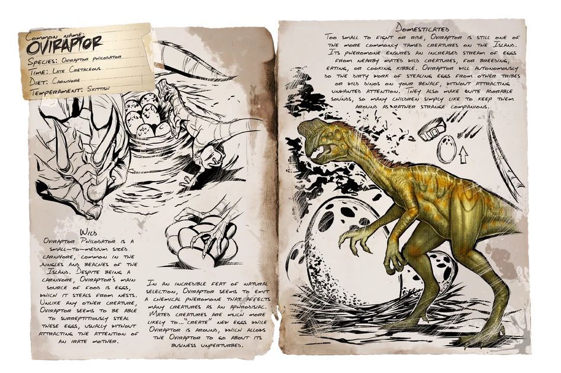

Primera aparición: Temporada 6 - prólogo
Tamaño (adulto): Longitud - 4 metros, Altura: 1,5 metros
Hábitat: LA ISLA, EL CENTRO, VALGUERO, RAGNAROK, FJOLDUR, TIERRA, GENESIS
Dieta: Carnívora
Comportamiento: Pasiva
Nivel de amenaza: Ninguna
Nivel de pelea: 600